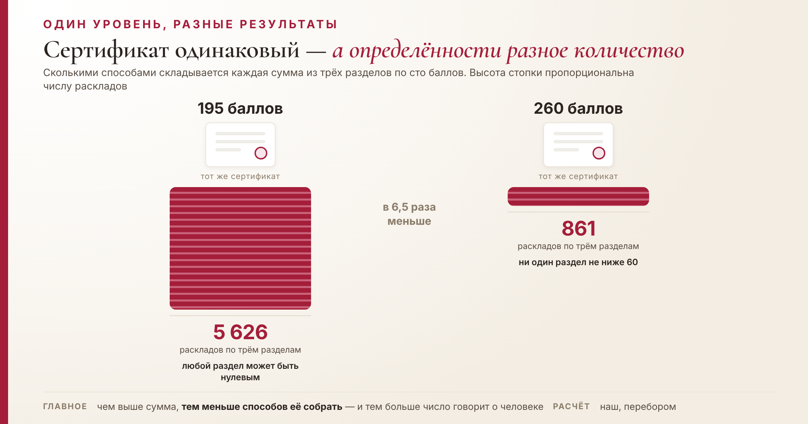
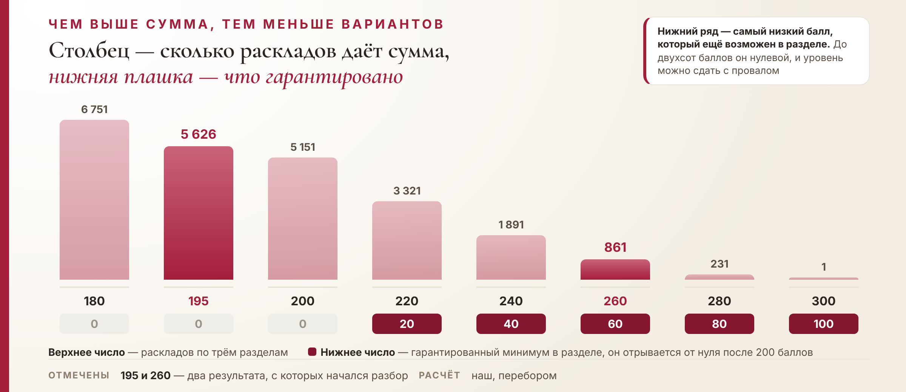

Экзамен
Результаты HSK: что значит ваш балл и почему 195 и 260 — это один уровень


Два человека сдали один уровень: у одного 195 баллов, у другого 260. Сертификат они получат одинаковый, и отсюда обычный вопрос — значит ли это, что разницы между ними нет. Разница есть, и её можно посчитать прямо.
Разберу, что ваше итоговое число говорит о подготовке, чего оно не говорит и с какой суммы оно начинает что-то гарантировать. Как баллы считаются и как прикинуть результат заранее, разобрано отдельно: система оценки HSK 4.
Короткий ответ: сертификат один, гарантии разные
Итоговая сумма складывается из трёх разделов, в каждом по сто баллов. Одно и то же число получается очень разными способами, и чем сумма ниже, тем этих способов больше.
Вот главное различие. При 195 любой из разделов может оказаться нулевым — арифметика это допускает. При 260 ни один раздел не может быть ниже 60 баллов, как ни считай.
То есть высокий результат говорит не просто «лучше». Он говорит «провала нет нигде», а низкий такой гарантии не даёт, даже когда уровень сдан.
Что из этого следует практически. Сумму стоит читать как ответ на один вопрос — сдан уровень или нет. Всё остальное читается по трём числам из отчёта, а не по итогу.
Дальше — расчёт: сколько именно раскладов прячется за каждой суммой, где проходит граница гарантии и что с этим делать.
Оговорюсь сразу: официальную методику обработки результата я не привожу — её не публикуют, а сочинять правдоподобную я не буду. Всё, что ниже, считается из двух известных величин — три раздела и сто баллов в каждом.
Почему сумма — это свёрнутые три числа
Устройство простое. На старших уровнях разделов три, каждый оценивается в сто баллов, максимум выходит 300. Порог сдачи — 180, то есть 60 процентов от максимума.
На первых двух уровнях разделов два, аудирование и чтение, и максимум вдвое меньше. Доля порога при этом та же самая, поэтому всё, что сказано ниже про раскладку, к ним относится в равной мере — только вариантов меньше.
На этом же держится и ответ на главный вопрос. Пока мы смотрим на одну сумму, два результата отличаются только величиной. Как только вспоминаем, что за каждым стоят три числа, разговор меняется: сравнивать приходится не точки, а то, из чего они собраны.
Ключевая мелочь, которую обычно пропускают. Порог сравнивают с суммой, а не с каждым разделом по отдельности. Отдельного минимума по разделам нет.
Именно отсюда и берётся вся неопределённость. Если бы требовалось брать порог в каждом разделе, по сумме можно было бы многое восстановить. А так — нельзя.
Сумма — это свёртка: три числа превращаются в одно, и часть сведений при этом теряется навсегда. Вопрос только в том, какая именно часть, и вот это как раз считается.
Бывают экзамены, где зачёт идёт по каждому разделу отдельно. Там итог почти не нужен: достаточно посмотреть, все ли пороги взяты. Здесь же итог — единственное, что сравнивают с порогом, и вся нагрузка ложится на него.
У такого устройства есть и обратная сторона, полезная сдающему. Слабый раздел можно перекрыть сильным, и уровень всё равно будет сдан. Многие именно так и сдают — и потом удивляются, почему следующая ступень даётся тяжело.
Дальше я везде считаю целые баллы от нуля до ста в каждом разделе. Это упрощение: настоящая обработка устроена сложнее. Но порядок величин оно показывает честно, а большего здесь и не нужно.
Сколько раскладов прячется за одной суммой
Посчитать это несложно, и считается оно раз и навсегда: устройство разделов не меняется от сессии к сессии. Поэтому таблица ниже годится для любого результата на старших уровнях, не только для двух чисел из вопроса.
Я перебрала все способы собрать каждую сумму из трёх разделов и посчитала, сколько их получается. Заодно — какой самый низкий балл в разделе при этой сумме ещё возможен.
Смысл подсчёта вот в чём. Если за суммой стоит много раскладов, число мало что сообщает: под ним помещаются очень разные люди. Если раскладов мало, число сообщает много — выбора у него почти не остаётся.
| Сумма | Раскладов по разделам | Низший возможный балл в разделе |
|---|---|---|
| 180 | 6 751 | 0 |
| 195 | 5 626 | 0 |
| 200 | 5 151 | 0 |
| 220 | 3 321 | 20 |
| 240 | 1 891 | 40 |
| 260 | 861 | 60 |
| 280 | 231 | 80 |
| 300 | 1 | 100 |

Это наш расчёт, а не опубликованная величина: перебор по двум известным числам, с проверками в коде. Официальная обработка устроена иначе, и методику её никто не публикует.
Посмотрите на две выделенные строки. За 195 стоит 5 626 возможных раскладов, за 260 — 861. Разница в 6,5 раза.
Читается это так. Чем выше сумма, тем меньше остаётся способов её собрать — значит, тем точнее число описывает человека. Полный балл вообще собирается единственным способом.
А у порога картина обратная: там вариантов почти семь тысяч, и про человека с таким результатом по одному числу нельзя сказать почти ничего.
Отсюда, кстати, понятно, почему сумма так плохо работает как мерка прогресса. Она меняется неравномерно: у верхнего края каждый балл стоит дорого, у нижнего — дёшево.
И почему два одинаковых результата могут значить разное. Одинаковая сумма — это не одинаковая подготовка, а всего лишь одна и та же точка, до которой дошли разными дорогами.
С какого балла провал становится невозможен
Третий столбец таблицы — самый практичный. Он отвечает на вопрос, который по сумме обычно и хотят выяснить: можно ли по ней понять, что нигде не провалено.
Граница проходит по 200 баллам. Пока сумма до них не дотягивает, нулевой раздел арифметически возможен: два других раздела способны вытянуть всё в одиночку.
Начиная с 201 балла это уже не так. Два раздела дают максимум 200, значит на третий обязательно приходится хоть что-то, и чем выше сумма, тем больше.
Вот почему 260 — это другой разговор, чем 195. При 260 каждый раздел гарантированно не ниже 60 баллов. При 195 гарантии нет никакой.
Обратите внимание: сам порог сдачи проходит ниже этой границы. То есть уровень можно сдать, имея в одном разделе ноль, — правила этого не запрещают.
На практике ноль, конечно, редкость. Но заметный провал в одном разделе при сданном уровне — вещь совершенно обычная, и сумма его не покажет.
Поэтому первый вопрос к любому сданному результату у меня один: насколько ровно он собран. Если сумма выше двухсот, часть ответа видна сразу.
Два года назад у меня занимались двое ребят, которые сдали один и тот же уровень в одну и ту же сессию. Суммы у них отличались на несколько баллов, и оба считали, что результат у них одинаковый.
Разделы показали совсем другое. У одного три числа стояли ровно, у второго одно было заметно ниже остальных, а два других почти на максимуме.
Дальше их пути разошлись. Первому можно было спокойно браться за следующий уровень: там всё опирается на предыдущий, и опора у него была равномерная.
Второму я предложила месяц не двигаться вверх, а закрыть провал. Он согласился неохотно: сертификат-то на руках, зачем возвращаться назад.
Через месяц он сам сказал, что понял причину. На следующем уровне тексты длиннее, и слабое место перестаёт быть мелочью: без него не идёт всё остальное.
С тех пор я первым делом спрашиваю не сумму, а три числа из отчёта. По сумме я могу сказать только одно: сдан уровень или нет.
И ещё одно наблюдение. Люди с ровными разделами почти никогда не удивляются своему результату, а люди с перекосом удивляются часто — и в обе стороны.
Объяснение простое: ровный результат предсказуем, а перекошенный держится на одном сильном разделе, и в день экзамена этот раздел может не сработать.
Что ваше число говорит, а чего не говорит
Сведу коротко. Четыре вопроса, которые обычно задают к итоговому баллу, и что он честно может на них ответить.
| Вопрос к сумме | Отвечает? | Почему |
|---|---|---|
| Сдан ли уровень | да | сумма сравнивается с порогом, и этого хватает |
| Есть ли провал в разделе | только выше двухсот | ниже этой суммы ноль в разделе арифметически возможен |
| Где именно слабое место | нет | это видно по разделам в отчёте, а не по сумме |
| Готовы ли вы к следующему уровню | нет | следующая ступень опирается на предыдущую целиком |
Из таблицы видно главное. Сумма отвечает ровно на один вопрос целиком и на один наполовину. На два остальных она не отвечает вовсе.
Это не недостаток экзамена. Так устроена любая свёртка: за компактность всегда платят подробностями, и число в сертификате — не исключение.
Практический вывод отсюда простой. Если вам нужно понять, что делать дальше, смотрите не на итог, а на три числа рядом с ним — они как раз для этого и напечатаны.
А сумму оставьте для тех случаев, где она работает: подтвердить сданный уровень перед вузом или работодателем. Там подробности и не спрашивают.
Что делать с результатом дальше
Три случая, которые встречаются чаще всего. Разбираю по тому, как выглядит отчёт, а не по сумме.
Разделы ровные, сумма невысокая. Самый спокойный вариант: слабых мест нет, просто общий уровень пока невысок. Можно двигаться на следующую ступень, заложив времени побольше обычного.
Один раздел заметно ниже остальных. Здесь я советую задержаться. Следующий уровень опирается на предыдущий целиком, и провал не исчезает сам — он начинает мешать там, где тексты длиннее.
Сумма высокая, разделы ровные. Тут вопросов нет: можно идти дальше или предъявлять результат там, где он нужен. Как устроена следующая ступень, разобрано отдельно: разбор HSK 4: экзамен, ловушки и новые форматы.
Отдельно про случай, когда слабым оказалось аудирование. Оно хуже всего поддаётся самостоятельному разбору после экзамена: ошибку не перечитаешь, и остаётся только общее ощущение.
Если же ниже всего письмо, разбор проще: ваши собственные тексты никуда не делись, и их можно показать преподавателю, не дожидаясь следующего экзамена.
И про устную часть. Письменный результат про неё не говорит ничего вообще — это отдельный экзамен с отдельным результатом: HSKK: как подготовиться к устному экзамену.
Сколько слов и знаков нужно на каждой ступени, посчитано у нас отдельно, и к своему результату это удобно прикладывать: как меняются требования к количеству иероглифов и слов.
Частые ошибки в чтении результата
- Сравнивать свою сумму с чужой — суммы собраны по-разному, и само по себе сравнение ничего не даёт.
- Считать сдачу впритык поводом идти дальше — порог проверяет минимум, а не готовность к следующей ступени.
- Делать выводы по сумме, не открыв разделы — всё интересное напечатано рядом с итогом, а не в нём.
- Думать, что сданный уровень обязан быть ровным — до двухсот сумма не гарантирует ничего, и перекос здесь обычное дело.
- Ждать от отчёта раскладки по заданиям — её там нет, поэтому ошибки разбирают сразу после экзамена, по своим записям.
Первая встречается чаще других, и она же обиднее всего. Человек видит у знакомого число выше своего и делает вывод о языке, хотя за этими двумя числами может стоять ровно обратное положение дел по разделам.
Последняя ошибка обходится дороже всех. Пока впечатления свежие, восстановить ход мысли ещё можно, а через месяц остаются только числа.
Чего в статье нет намеренно
- Подсчёта баллов и прикидки по пробнику. Это отдельная тема, и она разобрана у нас полностью: система оценки HSK 4 и подсчёт результата.
- Официальной методики обработки результата. Её не публикуют, и подменять её догадкой я не буду.
- Точного срока, когда приходит результат. Он зависит от сессии и центра, а описания расходятся: даты объявляет центр, и смотреть надо их.
- Проходных баллов конкретных программ. Порог экзамена и требование программы — разные числа, и вторые у каждой свои.
- Советов, как оспорить результат. Порядок пересмотра я не разбираю: здесь нужен ваш центр, а не статья.
Этот список не о том, что темы неважные. Он о том, что каждая из них требует своего разбора, а смешанная статья отвечает на все вопросы одинаково плохо.
И ещё об одном умолчании. Я нигде не называю «хороший» балл: он бывает хорошим только относительно задачи, а задачи у всех разные. День экзамена и то, где теряют баллы на формате, разобраны отдельно: как проходит день экзамена.
Частые вопросы (FAQ)
Какая разница между 195 и 260, если уровень один?
Сертификат одинаковый, а определённости за числами разное количество. По нашему расчёту сумму 195 можно собрать 5 626 способами, и среди них есть такие, где один раздел нулевой. Сумму 260 — всего 861 способом, и ни в одном из них раздел не опускается ниже 60 баллов. Высокий результат гарантирует, что провала нет нигде.
Почему два человека с одинаковой суммой готовы по-разному?
Потому что сумма складывается из трёх разделов, и одно и то же число получается очень разными способами. Один набрал ровно по всем трём, другой взял своё на двух и провалил третий. Для следующего уровня это совсем разное положение.
Как считаются баллы HSK 2?
На первых двух уровнях разделов два — аудирование и чтение, по сто баллов каждый, максимум двести. Порог — та же доля, что и на старших уровнях. Подробный разбор подсчёта у нас есть отдельно, ссылка стоит в тексте.
Когда будет готов результат HSK?
Срок зависит от сессии и от центра, а описания расходятся между собой, поэтому точного числа дней я называть не буду. Надёжнее смотреть дату публикации, которую объявляет ваш центр, и закладывать запас, если результат нужен к подаче документов.
Можно ли по сумме понять, какой раздел я провалил?
Нет. Сумма этого не показывает — для того и существует отчёт с отдельными числами по разделам. Единственное, что сумма говорит сама по себе: если она выше двухсот, то нулевого раздела у вас точно нет.
Стоит ли пересдавать, если сдал впритык?
Ради самого сертификата — обычно нет, он не станет другим. Пересдача имеет смысл, когда нужен высокий балл для конкретной программы или когда вы видите, что слабый раздел мешает учиться дальше.
Ещё один вопрос, который задают почти всегда: можно ли по результату понять, сколько осталось до следующего уровня. По сумме — нет. Следующая ступень спрашивает другой материал, и прежний результат говорит лишь о том, насколько прочно закрыта предыдущая.
Зато по разделам такой вывод делается легко. Ровные три числа означают, что основа держится и можно считать сроки обычным порядком. Перекос означает, что к обычному сроку стоит прибавить время на слабое место, иначе оно всплывёт в первый же месяц.
И напоследок то, что важнее всех чисел выше. Итоговый балл — это не оценка вам, а одна точка на шкале, и смысл у неё появляется только рядом с тремя числами из отчёта. Если хотите разобрать свой результат по разделам и понять, что с ним делать дальше, приходите на бесплатный урок: посмотрим отчёт вместе и наметим следующий шаг.
Источники
- Устройство разделов и порог — по нашим разборам системы оценки: три раздела по сто баллов на старших уровнях, максимум 300, порог 180.
- Доля порога — 60 процентов — посчитана мной по этим числам.
- Число раскладов за каждой суммой и низший возможный балл в разделе — наш расчёт перебором, а не опубликованная величина.
- Как результат обрабатывают официально, я не разбираю: этот порядок нигде не выложен, а гадать о нём в источниках неуместно.
- Сроки публикации результатов не называю: их объявляет центр, и они расходятся между сессиями. Расписание сессий разобрано отдельно: даты сдачи HSK: расписание сессий.
- Случай с двумя учениками взят из занятий Kitai School; имён и чисел из их отчётов не привожу.